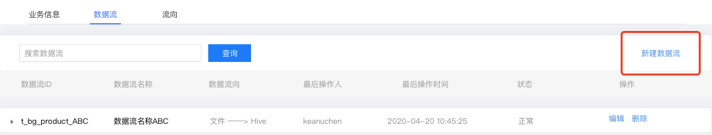
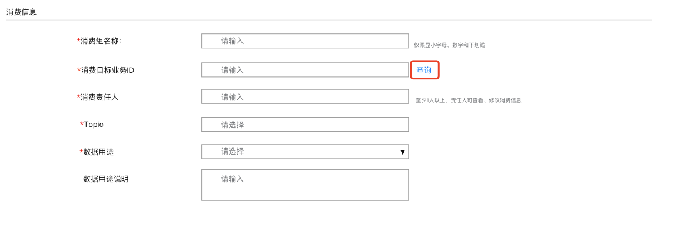
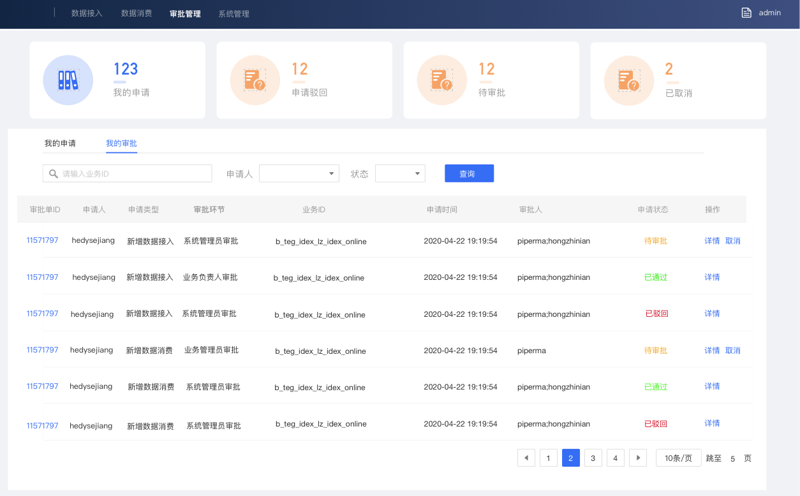

文档
文档
- 组件介绍
1. 用户登录
需系统使用用户输入账号名称和密码。

2. 数据接入
数据接入模块展示目前用户权限内接入系统所有任务列表，可以对这些任务详情查看、编辑更新和删除操作。
点击【数据接入】接入流程，数据接入信息填写有两个步骤：业务信息、数据流。

2.1 业务信息
2.1.1 业务信息
需要用户对接入任务填写基础业务信息。

- 业务ID：统一小写英文名称，请尽量包含产品名和简洁规范，如pay_base
- 业务中文名称：业务的中文描述，便于使用与检索，最多128个字
- 业务责任人：至少2人，业务责任人可查看、修改业务信息，新增和修改所有接入配置项
- 业务介绍：剪短信对此次接入任务进行业务背景和应用介绍：
2.1.2 接入要求
接入要求需要用户进行选择消息中间件：高吞吐（TUBE）：

高吞吐—Tube ：高吞吐消息传输组件，适用于日志类的消息传递。
2.1.3 接入规模
接入规模需要用户预先针对接入数据进行规模判断，以便后续分配计算和存储资源。

2.2 数据流
点击【下一步】进入到数据流信息填写步骤，数据流信息填写有四个模块：基础信息、数据来源、数据信息、数据流向。
在数据流流程中可以点击【新建数据流】，创建一个新的数据流信息填写页面：

2.2.1 基础信息
需用户对该接入任务中数据流的基础信息进行填写：

- 数据流ID：前缀根据BG/产品/项目自动生成，数据在业务中的唯一标识，InLong中某个业务数据定义的唯一标识，跟数据源中的数据流ID、入库信息表中的数据流ID一致
- 数据流名称：接口信息说明,长度限制为varchar(64)，32个中文
- 数据流责任人：数据流责任人可查看、修改数据流信息，新增和修改所有接入配置项
- 数据流介绍：数据流简单文本介绍
2.2.2 数据来源
需用户选择该数据流的消息来源，目前支持文件、自主推送三种方式，并且可以在高级选项中补充该数据来源详细信息：
-
文件：业务数据以文件形式存放，业务机器部署 InLong Agent，根据定制的策略规则进行读取
-
自主推送：通过 SDK 向消息中间件推送数据

2.2.3 数据信息
需用户填写该数据流中数据相关信息：

- 数据格式：数据来源格式，是普通文本类型，或者KV键值对数据
- 数据编码：如数据源含中文，需要选UTF-8或GBK，否则编码格式不对，入库后会乱码
- 源字段分隔符：数据发送到 MQ 里的格式
- 源数据字段：数据在 MQ 里按某种格式划分的不同含义的属性
2.2.4 数据流向
需用户对此任务的流向终流向进行选择，此部分为非必填项，目前支持Hive和自主推送两种：

HIVE流向：

- 目标库：hive数据库名（需要提前准备创建好）
- 目标表：hive表名
- 一级分区：hive数据划分hdfs数据一级子目录的字段名
- 二级分区：hive数据划分hdfs数据一级子目录的字段名
- 用户名：hiveserver连接账户名
- 用户密码：hiveserver连接账密码
- HDFS url：hive底层hdfs连接
- JDBC url：hiveserver 的jdbcurl
- 字段相关信息： 源字段名、源字段类型、HIVE字段名、HIVE字段类型、字段描述，并支持删除和新增字段
3. 接入详情
3.1 执行日志
当数据接入任务状态为”批准成功“和”配置失败“状态，可通过”执行日志“功能，以便用户查看任务执行进程进程和详情：

点击【执行日志】将以弹窗形式展示该任务执行日志详情：

执行日志中将展示该接入流程执行中任务类型、执行结果、执行日志内容、结束时间、如果执行失败可以”重启“该任务再次执行。
3.2 任务详情
业务负责人/关注人可以查看该任务接入详情，并在【待提交】、【配置成功】、【配置失败】状态下可对部分信息进行修改更新接入任务详情中具有业务信息、数据流、流向三个模块。
3.2.1 业务信息
展示接入任务中基础业务信息，点击【编辑】可对部分内容进行修改更改：

3.2.2 数据流
展示该接入任务下数据流基础信息，点击【新建数据流】可新建一条数据流信息：

3.2.3 流向
展示该接入任务中数据流向基础信息，通过通过下拉框选择不同流向类型，点击【新建流向配置】可新建一条数据流向：

4. 数据消费
数据消费目前不支持直接消费接入数据，需走数据审批流程后方可正常消费数据； 点击【新建消费】，进入数据消费流程，需要对消费信息相关信息进行填写：

4.1 消费信息
申请人需在该信息填写模块中逐步填写数据消费申请相关基础消费业务信息：

- 消费组名称：前缀根据BG/产品/项目自动生成，消费者的简要名称，必须是小写字母、数字、下划线组成，最后审批会根据简称拼接分配出消费者名称
- 消费责任人：自行选择责任人，必须至少2人；责任人可查看、修改消费信息
- 消费目标业务ID：需要选择消费数据的业务ID，可以点击【查询】后，在弹窗页面中选择合适的业务ID，如下图所示：
- 数据用途：选择数据使用用途
- 数据用途说明：需申请人根据自身消费场景，简要说明使用的项目和数据的用途
信息填完完成后，点击【提交】后，会将次数据消费流程正式提交待审批人审批后方可生效。

5. 审批管理
审批管理功能模块目前包含了我的申请和我的审批，管理系统中数据接入和数据消费申请审批全部任务。
5.1 我的申请
展示目前申请人在系统中数据接入、消费提交的任务列表，点击【详情】可以查看目前该任务基础信和审批进程：

5.1.1 数据接入详情
数据接入任务详细展示目前该申请任务基础信息包括：申请人相关信息、申请接入基础信息，以及目前审批进程节点：

5.1.2 数据消费详情
数据消费任务详情展示目前申请任务基础信息包括：申请人信息、基础消费信息，以及目前审批进程节点：

5.2 我的审批
作为具有审批权限的数据接入员和系统成员，具备对数据接入或者消费审批职责：

5.2.1 数据接入审批
新建数据接入审批：目前为一级审批，由系统管理员审批。
系统管理员将根据数据接入业务信息，审核此次接入流程是否符合接入要求：

5.2.2 新建数据消费审批
新建数据消费审批：目前为一级审批，由业务负责人审批。
业务审批：由数据接入业务负责人根据接入信息判断此消费是否符合业务要求：

6. 系统管理
角色为系统管理员的用户才可以使用此功能，他们可以创建、修改、删除用户：

6.1 新建用户
具有系统管理员权限用户，可以进行创建新用户账号：

- 账号类型： 普通用户（具有数据接入和数据消费权限，不具有数据接入审批和账号管理权限）；系统管理员（具有数据接入和数据消费权限、数据接入审批和管理账号的权限）
- 用户名称：用户登录账号ID
- 用户密码：用户登录密码
- 有效时长：该账号可在系统使用期限

6.2 删除用户
系统管理员可以对已创建的用户进行账户删除，删除后此账号将停止使用：

6.3 修改用户
系统管理员可以修改已创建的账号：

系统管理员可以修改账号类型和有效时长进行：

6.4 更改密码
用户可以修改账号密码，点击【修改密码】，输入旧密码和新密码，确认后此账号新密码将生效：